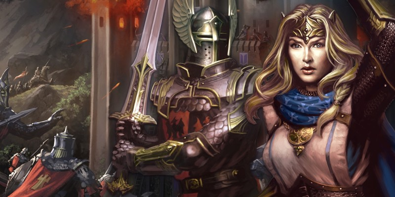

Combat de masse
Les règles de combats dans le Manuel des Joueurs sont conçues pour représenter des batailles entre de petits groupes (un groupe d'aventuriers qui peut-être composé de trois à six personnages contre un groupe de monstres qui dépassera rarement une douzaine de créatures). Les combats à cette échelle gardent ainsi l'accent sur les aventuriers.
Dans certaines campagnes de D&D, cependant, l'histoire peut dépendre de batailles impliquant des dizaines ou des centaines de monstres et de combattants. Les règles présentées ici s'appuient sur les règles de combat standard pour modéliser les conflits à une échelle beaucoup plus grande, tout en permettant à chaque aventurier de mener la charge d'une armée contre un groupe ennemi, de rallier des soldats découragés pour qu'ils rejoignent le combat, ou de vaincre les monstres ou les leaders les plus puissants.
Dans la plupart des cas, lorsque deux armées s'opposent l'une à l'autre, le MD sert de général pour un côté, et un ou plusieurs joueurs servent de généraux pour la force adverse. Ces leaders dirigent les soldats qui composent leurs armées, et tout le monde à la table devrait également représenter un champion (personnages joueurs ou PNJ importants) capable de modifier le cours de la bataille à lui seul.
Les combattants
Dans les règles qui suivent, les éléments d'une armée sont des groupes [stands], chacun représentant dix créatures du même genre, et des solos [solos], qui sont des individus puissants qui peuvent agir seuls ou se rattacher à un groupe allié. Un groupe se comporte comme une seule créature dans les règles de combat classiques, avec ses propres points de vie, ses jets de sauvegarde, et ses attaques.
Groupes et solos de chaque côté sont regroupés en unités de dizaines voire de centaines de créatures. Une unité se déplace et attaque généralement comme une seule entité, tous ses membres utilisant la même stratégie et les mêmes tactiques à chaque round.
Figurines et échelle
Pour la facilité de jeu, la clarté, et la vitesse de résolution des combats, ces règles supposent l'utilisation de figurines et d'un plan quadrillé, tout comme vous pourriez les utiliser pour le combat à petite échelle. Cependant, le temps et la distance fonctionnent un peu différemment en vertu de ces règles.
Temps. Chaque round représente 1 minute.
Distance. Une case mesure 6 mètres de côté.
Diagonales. Les cases contiguës diagonalement (celles qui se touchent seulement par un coin) ne sont pas considérées comme adjacentes ; chacune d'elles se situe à une case de distance des autres. Les groupes et les solos ne peuvent se déplacer en diagonale. Au moment de déterminer la distance entre une case et une autre, ne pas compter les cases diagonalement.
Groupes
Un groupe se compose de dix créatures identiques qui se déplacent et combattent comme une seule entité. Seules les créatures de taille Très Grande ou moins peuvent être organisées en groupe. Les créatures Gigantesques se battent toujours seules (voir solos ci-dessous).
Espace. Un groupe de créatures occupe le même espace sur une grille de 6 m. qu'une seule créature occuperait sur une grille de 1,50 m.
| Taille de la créature | Espace |
| Moyenne ou inférieure | 1 case |
| Grande | 2 x 2 cases |
| Très Grande | 3 x 3 cases |
Statistiques. Un groupe utilise les statistiques et les capacités spéciales des créatures du groupe, comme la classe d'armure, les points de vie, les capacités d'attaque et de dégâts, et ainsi de suite.
Vitesse. La vitesse d'un groupe est mesurée en case, et est égale à la vitesse d'une créature seule divisée par 1,5. Par exemple, un groupe d'hobgobelins (vitesse individuelle 9 m.) a une vitesse de 6 cases.
Unités
Une unité est un ensemble de groupes organisés en un seul bloc cohérent qui se bat et agit comme une seule entité. Une unité peut contenir des groupes de différentes sortes de créatures, comme des orcs et des ogres. Une unité peut contenir n' importe quel nombre de groupes.
Les groupes peuvent être organisés en unités de deux types différents : tirailleurs [skirmishers] et régiments [regiments]. En général, les tirailleurs portent des armures plus légères et se concentrent sur la reconnaissance, alors que les régiments se concentrent sur l'attaque ou sur la défense d'un point sur le champ de bataille. Le type d'une unité est décidé avant que la bataille commence et ne peut être modifié par la suite.
Tirailleurs. Les unités de tirailleurs sont mal organisées. Ils excellent à se déplacer rapidement, à effectuer des attaques éclairs, et dans la reconnaissance en avant de l'armée principale. Une unité de tirailleurs présente les caractéristiques suivantes :
- Tous les groupes de l'unité ont un avantage aux jets de sauvegarde de Dextérité.
- Une unité de tirailleurs utilise le modificateur de Dextérité le plus élevé parmi les groupes la composant pour déterminer son initiative.
- L'unité peut utiliser l'action Se Cacher (voir Actions de bataille ci-dessous).
- Un groupe allié peut se déplacer à travers l'espace d'un groupe de tirailleurs, mais ne peut pas y finir son tour.
- Un solo allié peut se déplacer à travers l'espace d'un groupe de tirailleurs, mais ne peut pas y finir son tour, sauf s'il utilise son action pour se rattacher à ce groupe.
- Un groupe de tirailleurs peut utiliser une partie de son mouvement, entreprendre une action, puis terminer son mouvement.
- Pour éviter de se retrouver isolé (voir Intégrité d'une unité ci-dessous), chaque groupe dans une unité de tirailleurs ne doit pas se trouver à plus de 1 case d'intervalle d'un autre groupe de cette unité à la fin d'un tour.
Régiments. Une unité de régiments se déplace en rangs stricts, créant une formation resserrée. Bien qu'ils soient plus lents que les unités de tirailleurs, les régiments sont aptes à délivrer des attaques puissantes et à tenir des points clés sur le champ de bataille. Une unité de régiments commence une bataille dans une des trois configurations possibles, définie par son général, et peut changer de configuration durant le combat (voir Configurer ci-dessous). Une unité de régiments présente les caractéristiques suivantes :
- Une unité de régiments utilise le modificateur de Dextérité le plus faible parmi les groupes la composant pour déterminer son initiative.
- L'unité peut utiliser l'action Configurer (voir Actions de bataille ci-dessous).
- Un groupe allié ne peut pas se déplacer dans ou à travers l'espace d'un groupe dans une unité de régiments.
- Un solo allié ne peut se déplacer dans l'espace d'un groupe d'une unité de régiments que s'il utilise son action se rattacher à ce groupe.
- Pour éviter de se retrouver isolé (voir Intégrité d'une unité ci-dessous), chaque groupe dans une unité de régiments doit être adjacent à au moins un autre groupe de cette unité à la fin d'un tour.
Solos
Un solo est une créature significative sur le champ de bataille, généralement un personnage joueur ou un PNJ/monstre puissant. Un solo a les caractéristiques suivantes :
- Un solo peut être détaché, se déplaçant et agissant de son propre chef sur le champ de bataille, ou être rattaché à un groupe et à une unité en utilisant l'action Rejoindre (voir Actions de bataille ci-dessous).
- Un solo détaché peut se déplacer à travers l'espace d'un groupe de tirailleurs allié, mais il ne peut pas y finir son tour, sauf s'il utilise son action durant le même tour pour rejoindre ce groupe.
- Un solo détaché ne peut se déplacer dans l'espace d'un groupe d'une unité alliée de régiments que s'il utilise son action durant le même tour pour rejoindre ce groupe.
- Un solo qui est rattaché à un groupe peut être, et est souvent, un commandant (voir la section suivante).
- Un solo occupe le même espace sur le champ de bataille qu'un groupe composé de créatures de sa taille (un solo Gigantesque occupe un espace de 4×4 cases).
- Pour éviter de se retrouver isolé (voir Intégrité d'une unité ci-dessous), un solo ne doit pas se trouver à plus de 1 case d'intervalle d'un groupe allié à la fin du tour.
Commandants
Les commandants jouent un rôle clé dans le façonnement d'une bataille. Tout personnage joueur peut servir en tant que commandant, tout comme les PNJ que le MD désigne. Les commandants sont toujours des solos, et un solo doit être rattaché à un groupe pour agir en tant que commandant d'une unité. Une unité ne peut avoir qu'un seul commandant (pour qu'un nouveau commandant prenne le relais, l'actuel doit quitter le poste). Un solo peut utiliser une action bonus pour devenir commandant d'une unité s'il a rejoint l'un des groupes de celle-ci. Il peut utiliser une autre action bonus pour cesser d'agir en tant que commandant. Il ne peut par contre plus servir comme commandant s'il ne peut pas réaliser d'actions. En tant qu'action bonus, un commandant peut appliquer l'un des avantages suivants à tous les groupes de son unité.
Se préparer
Un commandant peut ordonner à son unité d'être plus prudente en faisant un jet de Charisme DD 15 (Intimidation ou Persuasion). En cas de succès, l'unité à un avantage à tous les jets de sauvegarde jusqu'à la fin du prochain tour du commandant.
Motiver
Un commandant peut essayer d'inspirer aux soldats de son unité plus de motivation en faisant un jet de Charisme DD 15 (Intimidation ou Persuasion). En cas de succès l'unité à un avantage à tous ses jets d'attaque jusqu'à la fin de son prochain tour.
Rassembler
Un commandant peut inverser les effets d'un jet de moral raté en ralliant ses troupes de sorte qu'elles reprennent le combat (voir Vérifier le moral ci-dessous).
Intégrité d'une unité
Si les éléments d'une unité sont trop largement séparés lors d'une bataille, les groupes et les solos qui se retrouvent isolés de leurs alliés sont en danger d'être submergés par leurs ennemis. Un groupe ou un solo isolé a un désavantage aux jets d'attaque jusqu'à ce qu'il ne soit plus isolé. Quand un groupe ou un solo isolé est attaqué, l'attaquant a un avantage à son jet d'attaque. Si l'attaque réussit, elle inflige le double de dégâts.
Régiment. Un groupe dans une unité de régiments est isolé s'il n'est pas adjacent à un autre groupe de son unité.
Tirailleur. Un groupe dans une unité de tirailleurs est isolé s'il est à plus de 1 case d'intervalle de tout autre groupe de son unité.
Solo. Un solo est isolé s'il est plus à plus de 1 case d'intervalle de tout groupe allié, quelle que soit l'unité de ce groupe.
Terrains
Le terrain est un élément clé des combats à grande échelle, assez important pour être considéré comme un combattant par lui-même, s'alliant ou travaillant contre les soldats sur le terrain. Chaque case sur le champ de bataille peut avoir les caractéristiques de terrain qui suivent. Une case peut aussi être un terrain difficile, et certains types de terrain sont toujours difficiles, comme indiqué. Le MD devrait mettre un marqueur spécifique sur les cases de terrain difficile.
Libre. Un terrain libre n'offre aucun avantage ou obstacle particulier. Les cases libres composées de gravats ou en terrain accidenté sont des terrains difficiles.
Route. Si la dernière case du mouvement d'un groupe est une case de route, le groupe peut se déplacer d'une case de plus, indépendamment de sa vitesse restante. Les cases de route ne sont jamais des terrains difficiles, sauf si elles sont ciblées avec succès grâce à l'objectif Destruction (voir Création d'objectifs ci-dessous).
Forêt. Un groupe sur une case de forêt gagne une couverture partielle contre toutes les attaques. La forêt est toujours un terrain difficile.
Eau. Les cases d'eau sont profondes ou peu profondes. L'eau peu profonde est un terrain difficile. Seul un groupe composé de créatures qui ont une vitesse de nage, ou un solo qui a une vitesse de nage, peuvent entrer dans une case d'eau profonde.
Terrain surélevé. N'importe quel terrain autre que l'eau peut aussi avoir ce trait supplémentaire. Une zone de terrain surélevé possède un nombre qui représente sa hauteur relative (en multiples de 6 m.) par rapport à des cases à proximité d'une altitude plus basse. Un groupe ou un solo sur un terrain élevé a un avantage aux jets d'attaque au corps à corps contre des cibles qui sont à une altitude inférieure.
Se déplacer sur un terrain surélevé coûte 1 case de mouvement supplémentaire pour chaque 6 m. de différence d'altitude entre l'emplacement actuel du groupe ou du solo et sa case de destination. Si la zone supérieure est également un terrain difficile, le coût d'entrée est doublé.
Le système de combat
La procédure de combat dans une bataille de masse est très similaire à celle décrite dans les règles standard, sauf que l'activité dans un tour est simultanée plutôt que séquentielle. D'autres différences sont décrites dans cette section. En outre, les unités dans une bataille de masse ont accès aux nouveaux types d'action décrits ci-dessous.
Mise en place du combat
Naturellement, avant que l'action ne puisse commencer, les armées adverses doivent être positionnées sur le champ de bataille. Avant et pendant cette activité, quelques décisions doivent être prises :
- Les groupes doivent être organisés en unités, et ces unités définies comme tirailleurs ou régiments.
- Chaque régiment doit commencer dans une des trois configurations possibles (voir Configurer ci-dessous).
- Chaque solo doit commencer détaché ou rattaché à un groupe. Un solo qui est rattaché à un groupe est considéré comme ayant pris l'action Rejoindre avant que le combat ne commence, de sorte qu'il peut utiliser une autre action lors de son premier tour.
- Un solo qui est rattaché à un groupe est peut être désigné comme commandant.
A ce stade, une prise de notes est recommandée. Faites la liste des groupes qui appartiennent à chaque unité, de sorte que vous puissiez définir si un groupe est isolé ou si une unité est rompue (voir Vérifier le moral ci-dessous). Une fois ces tâches réalisées, il est temps de commencer le combat.
Initiative
Chaque unité tire son initiative en utilisant le modificateur de Dextérité maximal ou minimal selon son groupe (selon que l'unité soit un tirailleur ou un régiment). Cela comprend les solos qui sont attachés à une unité au début du tour (voir Rejoindre ci-dessous). Le MD peut aussi décider que certaines unités ou solos détachés soient surpris, sur la base de la situation au début de la bataille.
Mouvement
Au tour d'une unité, chaque groupe de l'unité peut se déplacer d'un certain nombre de cases en fonction de sa vitesse, suivant les règles pour chaque type d'unité. Une unité de tirailleurs peut utiliser une partie de son mouvement, utiliser une action, puis terminer son mouvement.
Adjacent à d'autres groupes. Il n'y a pas d'attaques d'opportunité dans ces règles, mais au lieu de cela un groupe ne peut pas se déplacer s'il est adjacent à un groupe ennemi, à moins que son unité utilise l'action Se replier. Cette restriction n'empêche pas les autres groupes de l'unité de se déplacer normalement ; seuls les groupes qui sont adjacents à des groupes ennemis sont bloqués.
Fuir le combat. Si un groupe se déplace de gré ou de force hors de la zone couverte par la grille, il est considéré comme ayant fui le champ de bataille et est éliminé.
Actions de bataille
Un round de combat dans ces règles représente les résultats globaux de 1 minute du combat. Au tour de l'unité, choisissez une action pour l'unité. Chaque groupe dans l'unité utilise individuellement cette action, ou ne prend aucune action. Sauf indication contraire (voir Lancer un sort ci-dessous), les groupes se trouvant dans la même unité ne peuvent utiliser des actions différentes.
Attaquer
Les attaques entre les unités fonctionnent de la même façon que dans les règles de combat classiques, mis à part ce qui suit.
Une unité qui effectue l'action Attaquer affronte une ou plusieurs autres unités, chaque groupe attaquant individuellement. Chaque groupe dans une unité dirige son attaque contre un autre groupe cible. Un groupe attaque comme les créatures qui le composent. Par exemple, si une créature a la capacité Attaques multiples, un groupe composé de ces créatures a également cette capacité. Différents groupes peuvent choisir différentes formes d'attaque, en fonction de leurs capacités. Par exemple, un groupe d'orcs peut faire une attaque au corps à corps avec de grandes haches, tandis qu'un autre groupe d'orcs de la même unité utilisera son attaque à distance à l'aide de javelines. Pour les capacités de monstre qui créent un effet à distance mesuré en mètres, convertir cette distance en case en la divisant par 1,5 et en utilisant les mêmes règles que pour calculer la vitesse d'un groupe. Par exemple, la charge d'un minotaure lui permet de pousser une cible jusqu'à 3 mètres. Un groupe de minotaures serait donc en mesure de pousser un groupe ennemi de 2 cases.
Jetez l'attaque et les dégâts du groupe comme dans les règles de combat classiques, en appliquant les dégâts aux points de vie du groupe cible.
Attaques au corps à corps. Un groupe qui fait une attaque au corps à corps doit être en mesure de cibler un groupe ou un solo situé dans une case adjacente.
Allonge. Un groupe qui a une allonge de 3 m. ou plus avec son attaque au corps à corps effectue une attaque bonus dans le cadre de son action Attaquer. Cet avantage représente la capacité du groupe à avoir plus de membres à portée lors d'une attaque.
Attaques à distance. Déterminez la portée normalement (n'oubliez pas que chaque case fait 6 m. de côté). Si la portée d'une attaque s'étend d'au moins 3 m. dans une case, l'attaque affecte cette case dans son intégralité. De même, si la portée d'une attaque s'étend de moins de 3 m., l'attaque peut tout de même viser un groupe ou un solo dans une case adjacente.
Lancer un sort
Déterminer l'effet d'un sort à l'aide de ces règles dépend du fait que le sort requiert des cibles ou couvre une zone d'effet, et s'il est lancé par un groupe ou un solo. Si une unité possède certains groupes qui peuvent lancer des sorts et d'autres qui ne le peuvent pas, les groupes qui ne peuvent pas lancer des sorts peuvent à la place utiliser toute action qu'ils sont normalement autorisés à choisir.
Portée. Déterminez la portée d'un sort de la même manière que pour une attaque à distance avec une arme. Si la portée d'un sort s'étend d'au moins 3 m. dans une case, l'attaque affecte cette case dans son intégralité. De même, si la portée d'un sort s'étend de moins de 3 m., le sort peut tout de même cibler un groupe ou un solo dans une case adjacente.
Sorts ciblés. Si un sort nécessite une cible, un groupe de lanceurs de sorts peut cibler un autre groupe à portée. Un sort qui cible plusieurs créatures peut affecter un groupe ou un solo isolé par créature qu'il peut cibler. Pour les sorts nécessitant un jet d'attaque d'un groupe contre un solo isolé, le groupe a un avantage au jet d'attaque et le sort inflige le double de dégâts. Si le sort permet un jet de sauvegarde, le solo a un désavantage à son jet de sauvegarde et prend le double de dégâts si le jet de sauvegarde échoue. Un solo peut lancer un sort ciblé contre un autre solo, en suivant les règles normales pour les sorts. Un tel sort est efficace contre un groupe uniquement si le sort cible normalement cinq ou plus créatures.
Zone d'effet. Un sort qui couvre une superficie affecte tous les groupes dans sa zone. Si la zone ne comprend pas toutes les cases occupées par un groupe, le sort inflige la moitié des dégâts à ce groupe (s'il inflige des dégâts) ou n'a pas d'effet. Si un groupe jette un tel sort, supposez que tous les lanceurs de sorts utilisent la même zone d'effet. Les cibles font les jets de sauvegarde comme d'habitude, mais prennent le double de dégâts du sort. Les solos lancent les sorts de zone comme d'habitude contre les solos ou les groupes dans la zone. Si un sort de zone a une portée "personnel", son point d'origine est le milieu de l'un des côtés de la case des lanceurs de sorts. Si le sort a une autre portée, la distance est mesurée à partir du milieu de l'un des côtés de la case des lanceurs de sorts.
Cône. La longueur d'un cône sur le champ de bataille est de 1 case pour chaque 3 m. Chaque case de la zone au-delà de la première doit être adjacente à la case qui est la plus proche du point d'origine. Un cône s'élargie au fur et à mesure qu'il s'éloigne du point d'origine. La largeur du cône à n'importe quelle position de sa longueur est égal au nombre de cases entre cette case et le point d'origine. Ajoutez les cases de largeur aussi uniformément que possible sur les deux faces du cône.
Cube, Cylindre, Sphère. La taille d'un cube ou le rayon d'un cylindre ou d'une sphère sur le champ de bataille est de 1 case pour chaque 3 m. Toute case dans la zone au-delà de celle qui contient le point d'origine doit se situer à une case de celle d'origine. Si la zone s'étend au-delà de ces cases, chaque case supplémentaire doit se situer à 2 cases de celle d'origine.
Ligne. La longueur d'une ligne sur le champ de bataille est de 1 case pour chaque 3 m. Chaque case de la zone au-delà de la première doit être adjacente à la case qui est la plus proche du point d'origine.
Configurer
(Régiments seulement)
Un groupe commence la bataille dans l'une des configurations suivantes. Il reste dans la configuration choisie jusqu'à ce qu'il utilise à nouveau cette action.
Soutien. Quand une unité dans la configuration de soutien utilise l'action Attaquer pour faire une attaque au corps à corps, des groupes de l'unité peuvent renoncer à leurs attaques pour soutenir les attaques au corps à corps d'autres groupes. Dans ce cas, le groupe qui soutien accorde un avantage aux jets d'attaque au corps à corps fait par un groupe adjacent de son unité. Un groupe peut accorder un avantage de cette manière même s'il n'a pas de cible valide pour sa propre attaque (représentant les soldats avançant pour remplacer les pertes, couvrant un flanc exposé contre une contre-attaque, ou distrayant l'ennemi avec des tirs). Une unité dans la configuration de soutien se déplace à la moitié de sa vitesse (arrondi à l'inférieur) pour refléter le fait que certains de ses membres se déplacent dans les rangs au lieu d'avancer.
Défense. Quand une unité est dans la configuration de défense, tous les groupes dans le régiment bénéficient d'un bonus de +2 à CA. L'unité ne peut pas utiliser l'action Attaquer tant qu'elle reste dans cette configuration. Une unité dans la configuration de défense se déplace à la moitié de sa vitesse (arrondi à l'inférieur) pour refléter le fait que ses membres se concentrent sur comment se protéger au lieu d'avancer normalement.
Marche. Un groupe en configuration de marche se déplace à pleine vitesse.
Foncer
Une unité qui utilise l'action Foncer gagne un bonus à sa vitesse égal à sa vitesse normale. Un régiment qui est dans la configuration de soutien ou de défense et qui utilise l'action Foncer peut se déplacer à pleine vitesse (et non pas à la moitié de sa vitesse) durant ce tour.
Se cacher
(Tirailleurs et solos seulement)
Utiliser cette action suit les règles de combat classique. Faites un jet de Dextérité (Discrétion) pour chaque groupe de l'unité qui tente de se cacher. Les conditions comme le manque d'éclairage peut signifier que certains groupes d'une unité peuvent tenter de se dissimuler tandis que d'autres ne le peuvent pas. Un groupe qui ne peut pas se cacher (ou choisit de ne pas tenter de le faire) ne peut entreprendre aucune autre action pendant le tour actuel de l'unité.
Rejoindre
(Solo seulement)
Rejoindre un groupe accorde une protection à une créature solo, de sorte qu'elle ne risque pas de prendre les pénalités dues à une position isolée. Pour utiliser l'action Rejoindre, un solo doit d'abord se déplacer dans l'espace d'un groupe allié. Son mouvement s'arrête alors à cet endroit. Puis, avec son action pour ce tour, le solo utilise l'action Rejoindre et est ainsi rattaché au groupe. Un solo ne peut pas rejoindre un groupe s'il dépasse de plus d'une catégorie la taille de celui-ci. A part cette limitation, n'importe quel nombre de solo peut rejoindre un groupe. Retirez alors le solo du champ de bataille et marquez le groupe d'une certaine façon pour signifier que le solo y est rattaché. Quand un solo rejoint un groupe, il est considéré comme faisant partie de celui-ci pour ce qui est du ciblage par un sort, bien qu'il continue d'utiliser sa propre CA et ses jets de sauvegarde contre les sorts.
Lorsque le groupe se déplace, le solo se déplace automatiquement avec lui. A son tour, il utilise son action normalement, mais n'utilise pas son propre mouvement. En lieu et place de son mouvement, il peut soit quitter le groupe (entrant dans un espace adjacent vide), soit rejoindre immédiatement un autre groupe adjacent de son unité.
Si le groupe est éliminé (voir Éliminer les pertes ci-dessous), les solos rattachés à celui-ci restent en jeu. Un solo nouvellement détaché peut immédiatement se rattacher à un groupe adjacent de son unité ou rester seul et occuper une ou plusieurs des cases que le groupe occupait précédemment.
Se replier
Tout groupe d'une unité qui utilise cette action peut se déplacer, même s'il commence son tour adjacent à un groupe ennemi ou devient adjacent à un groupe ennemi pendant son mouvement.
Dommages
Appliquez les dommages aux points de vie d'un groupe comme s'il s'agissait d'une créature individuelle. Si un groupe prend des dommages supérieurs à ses points de vie actuels, appliquez l'excédent des dommages à un groupe identique adjacent de son unité, s'il en existe un.
Comme les actions d'un tour sont considérées simultanées, un groupe n'est pas immédiatement détruit quand il est à 0 point de vie. Le groupe devient une perte, mais reste en jeu jusqu'à la fin du tour, effectuant les actions (y compris des attaques) et se déplaçant normalement s'il n'a pas déjà agit dans le round. Traitez le groupe comme s'il lui restait 1 point de vie. Vous pouvez pousser la figurine du groupe sur le côté ou lui mettre un marqueur pour indiquer que c'est une perte.
Fin du round
Contrairement aux règles standards de combat de D&D, ces règles présentées ici exigent que vous preniez quelques mesures spécifiques à la fin de chaque round de combat. Une fois que toutes les personnes impliquées dans une bataille ont joué leur tour, vous devez d'abord évaluer les pertes et ensuite vérifier le moral, avant que tout le monde ne passe au tour suivant.
Éliminer les pertes
A la fin du round, toutes les pertes sont éliminées (retirées du champ de bataille). Lorsqu'un groupe est éliminé, la personne qui contrôle son unité a la possibilité de déplacer immédiatement un groupe allié adjacent dans l'espace laissé vacant (les troupes peuvent se déplacer pour tenir le front, mais créent une autre ouverture ailleurs ce faisant).
Élimination d'un solo. Les solos utilisent toutes les règles de combat standards pour les dommages et la mort (dans le cas des personnages joueurs). Un solo mourant fait jusqu'à dix jets de sauvegarde contre la mort à la fin du round, l'un après l'autre, afin de déterminer son destin.
Vérifiez le moral
Peu de soldats veulent mourir. Si une unité subit des pertes importantes, les survivants peuvent perdre leur sang-froid dans la bataille. Plutôt que de rester et se battre, le reste de l'unité pourrait alors être tenté de fuir. Si une unité survivante a perdu plus de la moitié des groupes avec lesquels elle a commencé, elle doit immédiatement vérifier son moral. Un jet de moral est un jet de sauvegarde de Sagesse DD 10, en utilisant le modificateur de Sagesse le plus élevé parmi les groupes la composant (y compris les solos rattaché à un groupe survivant de l'unité). En cas d'échec au jet, l'unité est rompue. Pour le reste de la bataille, une unité rompue ne peut que réaliser l'action Se replier. Le MD détermine où l'unité se déplace, mais il doit chercher un chemin sûr, loin des unités ennemies. Un solo, qu'il soit rattaché ou détaché, n'est jamais rompu. Il peut décider de se déplacer avec une unité rompue ou immédiatement quitter l'unité au début de l'un de ses tours.
Rallier. Si une unité rompue a un commandant, l'unité a une chance de se rallier au début de son tour. L'unité fait un autre un jet de sauvegarde de Sagesse DD 10, avec un bonus égal au modificateur de Charisme du commandant. Si le jet réussit, l'unité n'est plus rompue. Elle joue alors son tour normalement.
Objectifs et points de victoire
Une bataille dure rarement jusqu'à ce qu'une armée massacre l'autre. Une fois que l'un des opposants a atteint ses objectifs, son adversaire concède généralement le champ de bataille, sachant que le combat est vain. Les règles de cette section sont conçues pour aider le MD à intégrer une bataille de masse dans sa campagne en donnant à chaque armée un objectif approprié et en lui fournissant un moyen de savoir qui gagne. Les objectifs définissent pourquoi deux armées s'affrontent et les conditions de victoire de la bataille. Tout comme les objectifs de rencontres décrites dans le Guide du Maître, l'objectif d'une bataille prend racines dans l'histoire passée, ce qui lui donne un but et une signification.
Si les objectifs fournissent les buts pour une bataille, les points de victoire (PV) vous permettent d'en mesurer le succès. Une armée gagne des points de victoire en atteignant ses objectifs. Une armée gagne une bataille lorsqu'elle marque plus de 10 points de victoire.
Création des objectifs
Les objectifs représentent les cibles fondamentales d'une armée. Deux forces opposées pourraient avoir le même objectif (capturer un pont) ou des intérêts conflictuels (détruire le pont ou le sauver). Dans certains cas, deux armées pourraient poursuivre des objectifs indépendants (sauver un commandant capturé ou défendre un château). Lors de la mise en place d'une bataille, examinez les possibilités suivantes pour définir les objectifs.
Usure. Un côté cherche simplement à affaiblir l'autre. Pour chaque unité ennemie éliminée, l'armée qui poursuit cet objectif gagne un certain nombre de points de victoire, tel que déterminé par le MD et basé sur le nombre d'unités dans la bataille.
Destruction. Une armée cherche à empêcher l'ennemi d'accéder une ressource précieuse, comme en détruisant un pont sur une rivière ou un dévastant des cultures qui autrement, pourraient soutenir une force d'invasion. Si cet objectif est en jeu, le MD choisit un nombre de cases sur le champ de bataille qui représentent la précieuse ressource et affecte à chaque case une valeur de points de vie variant de 10 à 100. Un groupe ou un solo peut attaquer une case objectif de la même façon qu'il attaque un ennemi. Une case est automatiquement touchée par les attaques au corps à corps et rate tous les jets de sauvegarde. La case prend les dégâts des sorts dont la zone d'effet la couvre entièrement. Les sorts ciblés lancés par des groupes peuvent endommager une case, mais pas ceux lancés par les solos. Une armée qui a cet objectif obtient des points de victoire en réduisant une case désignée à 0 point de vie. Le MD attribue à chaque case une valeur de point de VP de 1 à 5, en fonction de l'importance de l'objectif.
Protection. Cet objectif implique de défendre une position ou une ressource clé d'un attaquant. Il est toujours utilisé en conjonction avec l'objectif de destruction ci-dessus. À la fin de chaque round, une armée avec cet objectif gagne 1 point de victoire si elle a deux ou plusieurs groupes adjacents à un objectif qui n'a pas été réduit à 0 point de vie, et si aucun groupe ennemi ou solo ne se trouvent à deux cases de l'objectif.
Objectifs personnalisés. Pour créer un objectif unique, il suffit d'affecter une valeur de VP, généralement de 1 à 5, à une action ou à une condition qu'une armée doit remplir pour atteindre son objectif spécifique. Un unique objectif pourrait impliquer de tuer ou mettre hors service un commandant, forcer une armée adverse dans un espace confiné spécifique ou occuper et tenir un emplacement particulier.
Affecter les objectifs uniformément
Une fois que vous avez fixé des objectifs pour la bataille, il faut s'assurer que les deux armées ont la possibilité de marquer un nombre approximativement égal de points de victoire. Il est normal qu'il y ait une légère disparité (toutes les batailles ne sont pas équilibrées), mais gardez à l'esprit que l'armée qui a le plus de manières de marquer des points de victoire a une bien meilleure chance de sortir vainqueur globalement. Si vous voulez vous assurer d'un match équilibré, essayer de donner aux deux côtés un nombre égal d'opportunités.
Dans une bataille où chaque armée a un seul objectif spécifique, ce travail est facile. Par exemple, la destruction d'un pont est une valeur de 10 VP, le protéger de sa destruction a une valeur de 10 VP. Dans une situation plus fluide avec plusieurs objectifs en jeu, donnez à chaque côté au moins cinq occasions de marquer des points de victoire, et affectez une somme de VP qui dépasse 10 (disons entre 12 et 15). L'étalement des objectifs et leurs récompenses de cette manière donne aux commandants quelques options pour la victoire et maintient la bataille indécise.
Mettre fin à une bataille
Une bataille se termine quand un côté a amassé au moins 10 PV à la fin d'un round. A ce moment, déterminez le nombre de points de victoire total de chaque côté.
Si un côté a au moins 3 VP de plus que l'autre, il a remporté une victoire totale. Lancez un d20 pour chacune des unités du perdant qui a survécue à la bataille. Pour 10 ou plus, traiter l'unité comme éliminée ; ses survivants fuient et abandonnent la cause.
Si un côté a 1 ou 2 VP de plus que l'autre, le gagnant a remporté une victoire tactique. Le perdant se retire du champ de bataille avec ses forces restantes, tandis que les deux côtés prennent soins de leurs blessés... et peut-être faire des plans pour revenir à nouveau.
Si les deux parties ont un nombre égal de points de victoire à la fin de la bataille, le MD peut déclarer que la bataille débouche sur une égalité, ou que les armées peuvent combattre un tour de plus pour essayer de déterminer un vainqueur.
En raison de la façon dont les objectifs influent sur l'avenir d'un conflit, l'armée qui perd la bataille peut encore repartir avec des résultats positifs. Même si les personnages joueurs se sont battus du côté des perdants, eux et leur armée peuvent avoir atteint les objectifs nécessaires pour remplir une partie de leurs objectifs stratégiques dans la campagne.

Écrit par Mike Mearls, traduit par Garruth